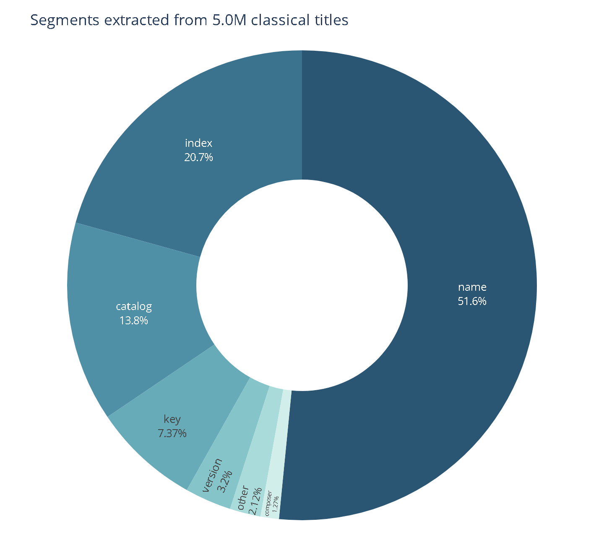
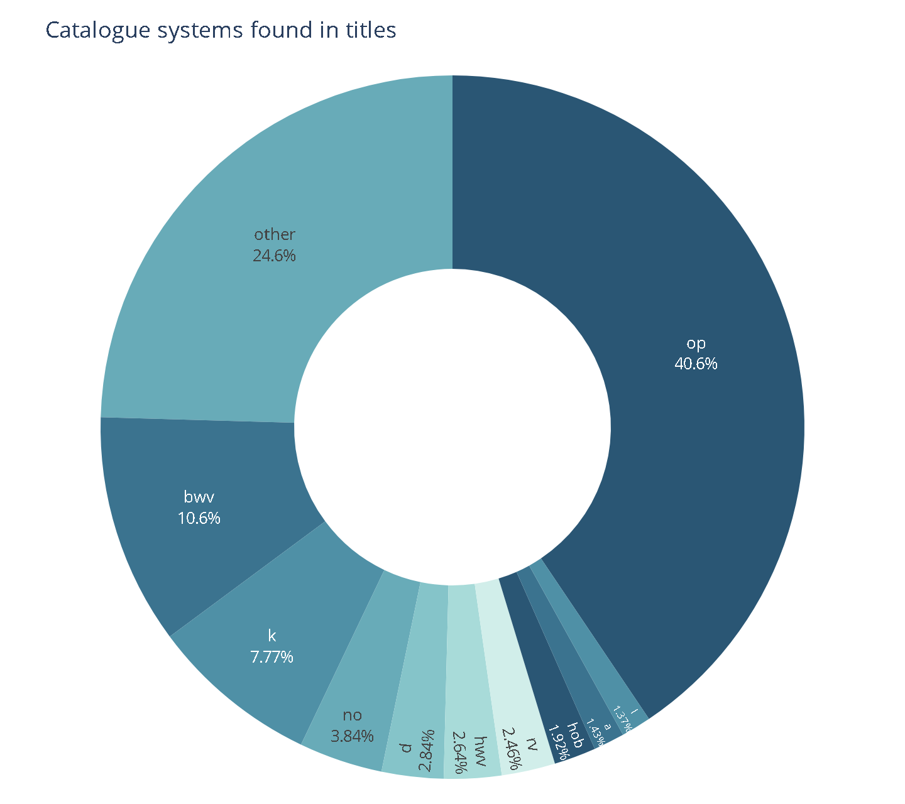
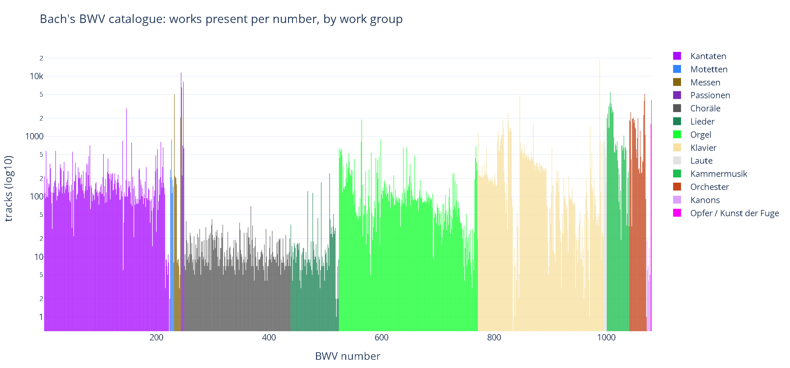
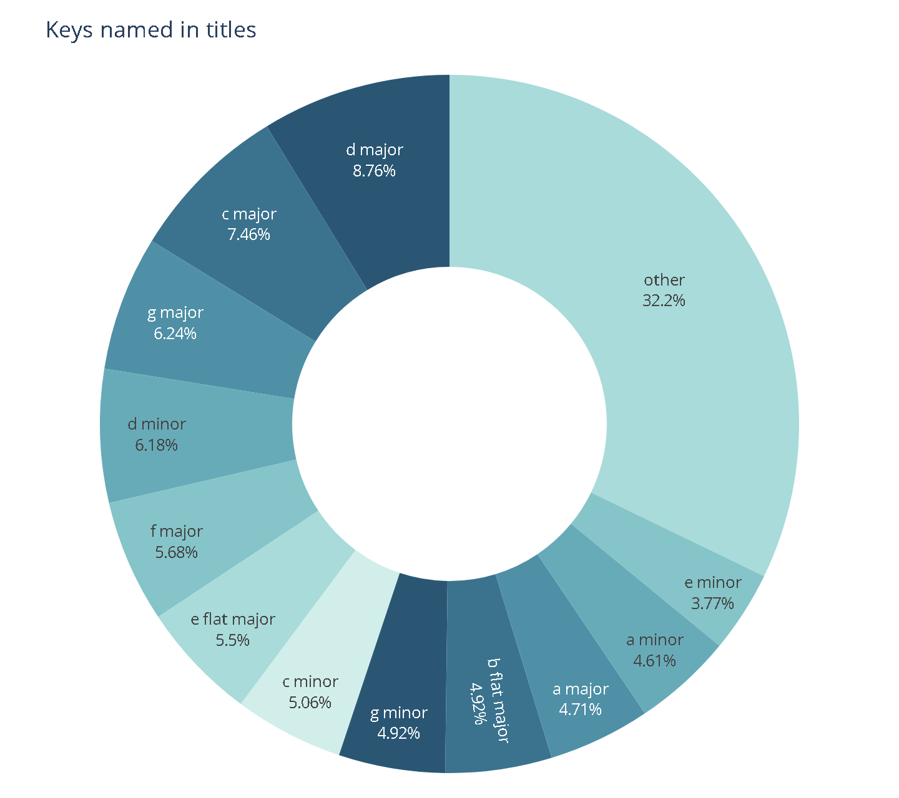
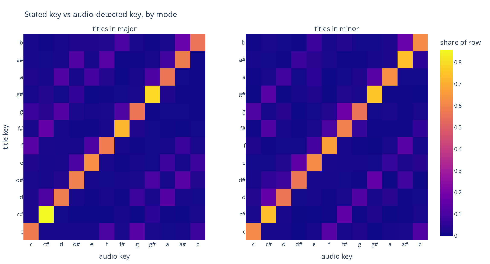

Spotify describes a classical recording with the same fields it uses for a pop song — artist, title, album — work, catalogue number and movement survive only as free text inside the title. This is a method for recovering them.
A BERT token classifier — bert-base-multilingual-cased, fine-tuned on
annotated titles — decomposes a title into ten segment types:
| Tag | Segment | Example |
|---|---|---|
| CO | composer | Chopin |
| N | name of the work or movement | Piano Concerto, Allegro maestoso |
| CA | catalogue number | Op. 11, BWV 1049, K. 331 |
| I | index / movement number | No. 1, II. |
| K | key | E minor |
| V | version, edition or performance qualifier | Live, arr., Remastered |
| D | delimiter | in, ,, : |
| M | markup | brackets, quotation marks |
| S | whitespace | — |
| O | other | — |
A title such as
Piano Concerto No. 1 in E minor, Op. 11: I. Allegro maestoso
is rewritten as
<CO>Chopin<D>:<S> <N>Piano Concerto<S> <I>No. 1<S> <D>in<S> <K>E minor<D>,<S> <CA>Op. 11<D>:<S> <I>I.<S> <N>Allegro maestoso
which is not a better string but a set of join keys: Chopin links the
recording to a composer page, Op. 11 links it to every other recording of
the same work, I. orders the movement inside the work, E minor
becomes a filter.
Applied to the classical portion of Spotify — 5.0 million titles, 18.3 million extracted segments.

Names and movement indices dominate, followed by catalogue numbers and keys: exactly the information a work-centric player needs and a track-centric catalogue lacks.

Catalogue numbers are the work identifiers, and they arrive in many numbering systems at once — Opus, BWV, Köchel, Hoboken, Ryom, Deutsch — which is why a normalised work identifier has to be constructed rather than read off a field.
Searching this index is exact. Asking for Beethoven’s Op. 111 returns 997 entries from Spotify — every recording of that sonata, and nothing else, rather than whatever titles happen to contain those characters.

For one composer the index resolves to individual works: simply counting tracks per BWV number covers Bach’s complete output, grouped into its standard categories.

Keys appear in 1,291 different spellings, collapsing to the 24 a listener would recognise — free text turning into a usable filter.

It also allows verification: comparing the key stated in the title against the key detected in the audio shows where catalogue metadata and recording agree, and flags mislabelled, transposed or arranged releases.
Popular music fits the streaming data model: one artist, one title, one album, and the artist is who you are looking for. Classical music breaks it in two ways.
Its taxonomy is different. A work is not a recording: one sonata exists as hundreds of recordings by different pianists, on different labels, in different decades, arrangements/instruments each containing several movements. The entities a listener cares about are not the ones the platform indexes.
This mismatch is why Apple Music Classical and IDAGIO exist, and why both had to build a work-centric, composer-first model themselves. This is an experiment which turns a flat list of tracks into an index organised the way classical listeners can browse.